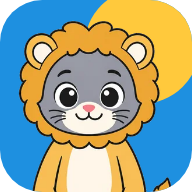

Bichito CuriosoPolítica de privacidad
Última actualización: 23 de septiembre de 2026
- Todo lo que carga el chico queda en este aparato. No lo mandamos a ningún servidor.
- Para entrar se usa el mail de un adulto, sin contraseña. Sirve sólo para entrar y para recuperar el PIN de los padres.
- No hay publicidad, ni herramientas de seguimiento o estadísticas de terceros.
- Un adulto puede borrar todo cuando quiera desde el panel para padres.
Quiénes somos
Bichito Curioso es una aplicación educativa para chicos de 4 a 12 años, con juegos y lecciones de matemática, lengua, ciencias, geografía e inglés.
Qué datos usa la app
Para funcionar, la app guarda:
- el nombre o apodo y la edad de cada chico, para saludarlo y elegir los juegos de su edad;
- si es nene o nena, si se contesta, sólo para escribirle «listo» o «lista»;
- si un adulto quiere, una foto tomada de la galería del aparato, para la carita del perfil;
- su progreso: partidas, respuestas, estrellas, monedas, lecciones leídas y lo que compró en la tienda con monedas de mentira;
- los ajustes: sonido, voz, meta del día, límites del modo parental y el PIN del panel para padres.
Todo eso se guarda en el almacenamiento del navegador o de la app, en este aparato y en ningún otro lado. No tenemos servidores que lo reciban. La foto se achica en el aparato y tampoco sale de ahí.
La cuenta: el mail del adulto
Para usar la app, un adulto entra con su mail: le llega un código de 6 números y lo escribe en la app. Es una sola cuenta para toda la familia. De la cuenta guardamos sólo el mail (y cuándo se creó y cuándo se usó por última vez). No guardamos nada de los chicos ahí: ni nombres, ni edades, ni fotos, ni progreso.
El mail se usa para dos cosas: entrar, y mandar un código si alguien se olvida el PIN del panel para padres. No lo usamos para publicidad ni lo compartimos con nadie. La cuenta la maneja Supabase (supabase.com), el servicio que manda los códigos, según su propia política de privacidad.
La cuenta se borra desde el panel para padres, en «La cuenta» → «Borrar la cuenta». Eso borra el mail de nuestro servidor y todos los datos de la app del aparato.
Qué no hacemos
- No mostramos publicidad.
- No usamos herramientas de estadísticas, seguimiento ni identificadores publicitarios.
- No pedimos la ubicación, la cámara, el micrófono ni los contactos.
- No hay chat ni forma de que un chico hable con otras personas.
- No vendemos ni compartimos datos con nadie.
La lectura en voz alta
La app puede leer en voz alta las lecciones, las preguntas y el tutorial. Para eso usa las voces que trae el aparato (de Google, Microsoft o Apple). Algunas voces «naturales» funcionan por internet: en ese caso, el sistema del aparato manda el texto que se lee a esa empresa para convertirlo en voz, según su propia política de privacidad. El texto es el de la app; el único dato del chico que puede aparecer es su nombre, en los saludos. La lectura se apaga en Configuración → «Leer en voz alta».
Los pagos
La suscripción se cobra a través de Google Play. La app nunca ve ni guarda datos de tarjetas: los maneja Google, según su propia política. La app sólo le pregunta a Google si la suscripción está activa.
Las copias de seguridad
Desde Configuración se puede guardar una copia de todo en un archivo. Ese archivo queda en el aparato o donde el adulto decida guardarlo (por ejemplo, su Drive). Nosotros no lo recibimos.
Cómo borrar los datos
En el panel para padres (el botón «Padres» con candado, arriba a la derecha del inicio), en «Borrar datos», se puede borrar a un jugador o todos los datos de la app, y en «La cuenta», la cuenta con el mail. Si ya no tenés la app, escribinos y la borramos nosotros. También se borran al desinstalar la app o al borrar los datos del navegador. Como no guardamos copias en ningún servidor, borrarlos del aparato es borrarlos del todo.
Los chicos
La app está pensada para chicos, y el adulto responsable es quien la instala y la configura. Seguimos la política para familias de Google Play y la Ley 25.326 de Protección de los Datos Personales de la República Argentina.
Cambios
Si cambia algo de esta política, lo vamos a publicar en esta misma página con una fecha nueva.
Contacto
Para cualquier consulta sobre privacidad, escribinos al correo de contacto que figura en la ficha de Bichito Curioso en Google Play.